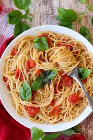

Burst Cherry Tomato Pasta

Description
A simple sauce of juicy, bursty cherry tomatoes that comes together in around 15 minutes.
Ingredients
- Olive Oil
- 6 Garlic Cloves, Minced
- 2 lbs Cherry Tomatoes
- Crushed Red Pepper Flakes
- Basil
- Salt
- Pasta
- Parmesan
Steps
- Heat a pan on medium low with a coat of olive oil on the bottom.
- When oil is warm add garlic and cook until softened and fragrant.
- Add tomatoes, red pepper flakes, basil, and salt and cook until tomatoes begin to burst. Approx. 5 minutes
- Lower heat and continue to cook for 10-15 minutes or until tomatoes are broken down to your desired amount. Stirring occasionally.
- While tomatoes are cooking down cook pasta according to its directions
- Drain pasta and add to tomato mixture.
- Top generously with parmesan and serve